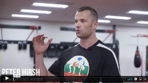

B786 · Move like a bat out of hell
Hello {first_name},
Bulgarian Bag training is one of the best ways I know to develop overall athleticism and strength:
If you’re at all interested in the Bulgarian Bag, watch this ~5 min video about the certification and hear what people have said after experiencing it.
 I'm excited to share that I’ve got an online certification coming up at the end of August.
If you want functional strength - meaning that you can kick, throw, punch, run, and move like a bat out of hell - the Bulgarian Bag is a great tool.
And we have a ton of fun!
Apply today and receive more details. There is an application process this time so I can learn the needs of each person attending and tailor the certification + a custom workshop to the specific needs of this group.
I hope I get the opportunity to work with you soon,
Train Intentionally, Mike Salemi |